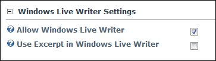

Windows Live Writer Settings
How to configure the Windows Live Writer Settings (WLW) for the View_Blog module.
- Select Module Options from the View_Blog module actions menu. This opens the Blog Module Options page.
- Go to the Windows Live Writer Settings section.
- At Allow Windows Live Writer, enable users to use WLW (or other remote blogging tools that use the MetaWeblog API) to post and edit blog posts - OR - to disable.
- At Use Excerpt in Windows Live Writer, to enable the user to use the Excerpt text box in WLW at the bottom to create a summary of the post in plain text. Any split in the post will be ignored and the excerpt will be used instead. This is useful if you want to ensure the summaries are text only (I.e. not HTML).

-